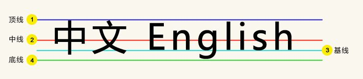

line-height: 1.5所有可继承元素根据font-size重计算行高line-height: 150%/1.5em当前元素根据font-size计算行高，继承给下面的元素
推荐使用数值，不使用百分比/em
定义：行高，两行文字基线之间的距离。
注意：不同的字体的基线位置是不一样的！比如微软雅黑字体的基线是略微下沉一点的。
所以不同的字体在同样的条件下显示情况可能不一致（初始化字体）
line-height: 1.5所有可继承元素根据font-size重计算行高
line-height: 150%/1.5em当前元素根据font-size计算行高，继承给下面的元素
推荐使用数值，不使用百分比/em
 xx: 哇!我的女神在看我哎！
xx: 哇!我的女神在看我哎！
行高不会影响图片占据的高度
图片默认跟文字基线对齐，使得底部有间隙。
img { display: block; }
img { vertical-align: bottom; }
.box { line-height: 0; }
.box { line-height: 300px; text-align: center; }
.box > img { vertical-align: middle; }
基情初现！
vertical-align的百分比值是相对于line-height计算的！
一个文字和一个图片 - again：
vertical-align[0%]:
IE6/IE7下vertical-align百分比值不支持小数line-height
基情四射！
display更改元素的显示水平
CSS声明更改元素的显示水平
根据定义：元素垂直中心点和父级基线上1/2 x-height对齐
x
黄线：容器中心；红线：图片中心
font-size(24-120):
盒子的顶部和父级content area的顶部对齐。
盒子的低部和父级content area的低部对齐。
20px
24px
32px
40px
20px
24px
32px
40px
父级的font-size大小：
.dib-baseline {
display: inline-block; width: 150px; height: 150px;
border: 1px solid #cad5eb; background-color: #f0f3f9;
}
<span class="dib-baseline"></span> <span class="dib-baseline">x-baseline</span>
x-baseline
CSS2的可视化格式模型文档：
The baseline of an 'inline-block' is the baseline of its last line box in the normal flow, unless it has either no in-flow line boxes or if its 'overflow' property has a computed value other than 'visible', in which case the baseline is the bottom margin edge.
'inline-block'的基线是正常流中最后一个line box的基线, 除非，这个line box里面既没有line boxes或者本身'overflow'属性的计算值而不是'visible', 这种情况下基线是margin底边缘。
1.line-height，适用于单行文本
这是一段测试的文字， css样式为：height: 6em; line-height: 6em;
.pic_box{width:300px; height:300px; font-size:0;}
.pic_box img{vertical-align:middle;}
.pic_box:after{display:inline-block; width:0; height:100%; content:"center"; vertical-align:middle; overflow:hidden;}
.pic_box {
width: 300px;
height: 300px;
background-color: #beceeb;
display: table-cell;
text-align: center;
vertical-align: middle;
}
.content {
position: absolute;
top: 50%;
left:50%;
width: 240px;
margin-left: -120px;/* 目标元素的宽度的一半 */
height: 240px;
margin-top: -120px; /* 目标元素的高度的一半 */
}
此方法只适用于固定大小的元素
#content {
position: absolute;
top: 0;
bottom: 0;
left: 0;
right: 0;
margin: auto;
height: 240px;
width: 70%;
}
.inner{
position : absolute;
top: 50%;
left:50%;
-webkit-transform: translate(-50%,-50%);
-moz-transform: translate(-50%,-50%);
-ms-transform: translate(-50%,-50%);
-o-transform: translate(-50%,-50%);
transform: translate(-50%,-50%);
}
.box{
display: flex;
align-items:center;
}
这是一段测试的文字
让最外面的浮动层相对定位，left等于50%，然后内部嵌套层也使用相对定位且left设为-50%，这样的效果就是内层相对整行为水平居中